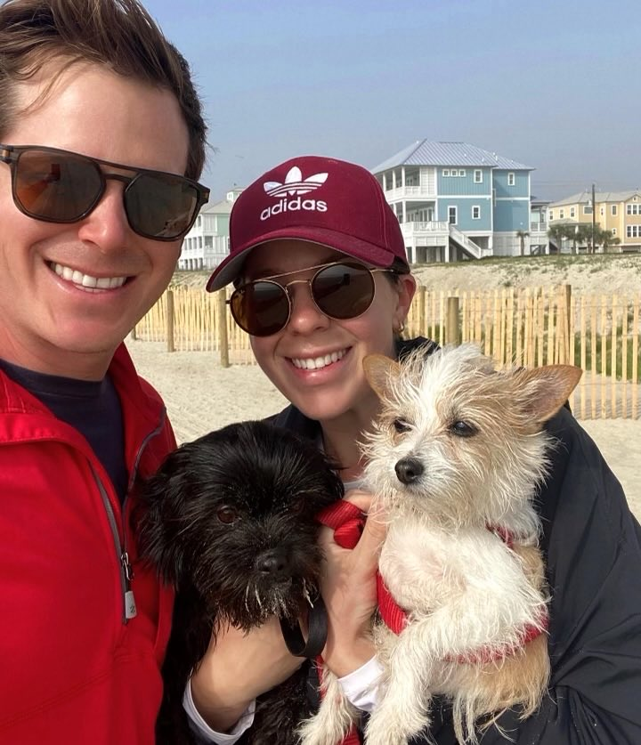

Figuring out what to do with one's life is one of the most difficult decisions a person can make. Fortunately for Whitney and her husband Bobby, they were able to build their own business, and they could not be happier with the life it provides for them.
Building and maintaining a business is no cakewalk, but the rewards it brings make it all the more worthwhile. Once a year, she makes it a point to travel to her favorite getaway destination in Cape Town, South Africa.
Establishing a successful business is an amazing accomplishment for Whitney, but she isn't stopping there. She is in pursuit of a new goal: obtaining her real-estate license. This way, she can combine her love of homes with the satisfaction she gets from serving those who wish to find a residence of their own.